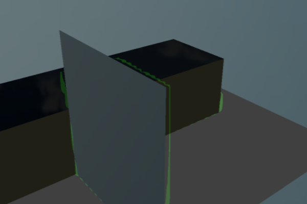
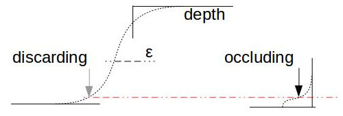

SSAO¶
Memo: Failed Experiment¶
Why Failed to detect AO with depth LOD.
Fragment Shader
uniform float u_ssaoRadius;
uniform float u_ssaoIntense;
uniform float u_ssaoLOD;
vec2 ssaoSampling( sampler2D depth, vec2 uv0, float theta, vec2 r, float lod, float e ) {
float ao = 0.;
float w = 0.;
vec2 sampleuv = uv0 + vec2(cos(theta), sin(theta)) * r;
float us_ = texture( depth, sampleuv ).z;
if (us_ + 0.1 * e < us2 && us2 - us_ < e) {
ao = smoothstep(0., e, textureLod( depth, sampleuv, lod ).z - us2 );
w++;
}
sampleuv = uv0 + vec2(cos(theta + Pi2_3), sin( theta + Pi2_3)) * r;
us_ = texture( depth, sampleuv ).z;
if (us_ + 0.1 * e < us2 && us2 - us_ < e) {
ao = smoothstep(0., e, textureLod( depth, sampleuv, lod ).z - us2 );
w++;
}
sampleuv = uv0 + vec2(cos(theta - Pi2_3), sin( theta - Pi2_3)) * r;
us_ = texture( depth, sampleuv ).z;
if (us_ + 0.1 * e < us2 && us2 - us_ < e) {
ao = smoothstep(0., e, textureLod( depth, sampleuv, lod ).z - us2 );
w++;
}
return vec2(ao, w);
}
float ssao(sampler2D tex, vec2 uv) {
float epsilon = 0.01 * max(0.0001, 1. - us2 * us2);
float lod = u_ssaoLOD;
vec2 r = u_ssaoRadius / u_texsize / max(0.03, us2);
float us = 0.;
float w = 0.;
float us_ = texture( tex, uv, lod ).z;
if (us_ + 0.1 * epsilon < us2 && us2 - us_ < epsilon) {
vec2 aov2;
for (int i = 0; i < 5; i++) {
float d = float(i) / 5. * Pi2_3;
aov2 += ssaoSampling( tex, uv, d, r, lod * 0.1, epsilon );
}
return max(us2 - aov2.x/15., 0.) * u_ssaoIntense;
}
return 0.;
}
Parameters:
finalQuad: {
ssao: { radius: 8,
intense: 2,
depthLOD: 8,
}
}